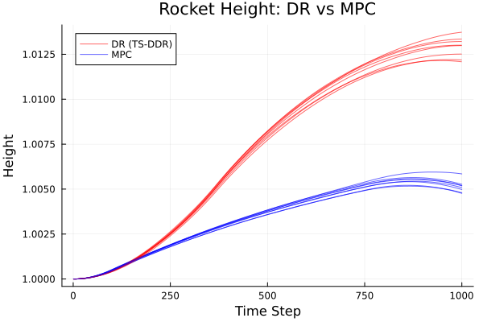

Rocket Control
This example trains a TS-DDR policy for a 1D rocket soft-landing problem under wind uncertainty, then compares it against a rolling-horizon MPC baseline.
The rocket must reach height h = 0 with velocity v = 0 while minimizing fuel usage, subject to random wind disturbances at each of 999 time steps.
Problem formulation
State: (v, h, m) — velocity, height, mass. Action: u — thrust (bounded, discretized into stages). Dynamics (Euler):
\[v_{t+1} = v_t + (u_t - g \cdot m_t + w_t) \cdot \Delta t / m_t\]
\[h_{t+1} = h_t + v_t \cdot \Delta t\]
\[m_{t+1} = m_t - \alpha \cdot u_t \cdot \Delta t\]
The policy outputs target states (v̂, ĥ, m̂) at each stage. A small optimization subproblem projects these onto the feasible dynamics and returns the optimal thrust.
using DecisionRules
using JuMP, Ipopt
using Flux
using Statistics, RandomBuilding the problem
build_rocket_problem creates the deterministic-equivalent JuMP model, and build_rocket_subproblems creates per-stage subproblems for stage-wise training.
include("build_rocket_problem.jl")
det, state_in, state_out, x0, uncertainty, x_v, x_h, x_m, u_max =
build_rocket_problem(; penalty=1e-5)
subproblems, state_in_s, state_out_s, x0_s, uncertainty_s, v, h, m, u_max_s =
build_rocket_subproblems(; penalty=1e-5)Policy
A small LSTM-based network maps [wind_t; v_t; h_t; m_t] → [v̂, ĥ, m̂]:
policy = Chain(
Dense(4, 32, sigmoid),
x -> reshape(x, :, 1),
Flux.LSTM(32 => 32),
x -> x[:, end],
Dense(32, 3),
)Training
Deterministic equivalent: couples all stages into one NLP.
train_multistage(
policy, x0, det, state_in, state_out, uncertainty;
num_batches=10, optimizer=Flux.Adam(),
)Stage-wise subproblems: sequential per-stage solves.
train_multistage(
policy, x0_s, subproblems, state_in_s, state_out_s, uncertainty_s;
num_batches=10, optimizer=Flux.Adam(),
)MPC Baseline
The rolling-horizon MPC baseline re-solves the full remaining horizon at each stage with perfect knowledge of the current state but no future wind information. See run_mpc_rocket.jl.
Results
Height trajectories for the common saved evaluation seeds:

| Method | Scenarios | Final Height (mean ± std) | Final Height Range | Peak Height (mean ± std) |
|---|---|---|---|---|
| TS-DDR | 8 | 1.01288 ± 0.00058 | 1.01208–1.01373 | 1.01289 ± 0.00056 |
| MPC | 8 | 1.00514 ± 0.00034 | 1.00476–1.00585 | 1.00549 ± 0.00025 |
The table uses the first saved trajectory for each common seed in examples/rocket_control/dr_results and examples/rocket_control/mpc_results.